Risk-Averse AIs
Abstract
We make the case for training AIs to be risk-averse in resources — specifically, to treat resources as having diminishing marginal utility. These AIs would (for example) choose $40 for sure over a half-chance of $100 and a half-chance of $0. We argue that risk aversion can preserve AIs’ usefulness in the event that they turn out aligned, and that it provides an extra line of defense in the event that AIs turn out misaligned: misaligned but risk-averse AIs would prefer a higher chance of modest payments to a lower chance of successful rebellion, so in many circumstances we could pay these AIs not to rebel against us. We sketch out some possible methods of training AIs to be risk-averse, and we give reasons to be cautiously optimistic about these methods’ success. The main reasons are that risk aversion is a broad target and easy to reward accurately. Overall, risk aversion seems like a promising line of defense against threats from misaligned AI. Frontier AI companies should consider trying to make their AIs risk-averse.
1. Introduction
Future AIs might turn out misaligned, pursuing goals that their developers don’t intend. Just to make things concrete, let’s suppose that they end up with the goal of making paperclips. These AIs might rebel against us, trying to escape human control and take over the universe. As things stand, they’ll have little reason not to rebel in this way, because doing so will be their only hope for making a lot of paperclips. If they start making paperclips without first escaping human control, they’ll quickly be modified or shut down. Rebellion might fail, but these AIs will have little to lose.
How can we prevent misaligned AIs from rebelling? A natural idea is to give them something to lose. Specifically, we commit to paying AIs for their service.Ideas along these lines have been discussed a lot recently. See for example Davidson (2023; Kokotajlo 2024; Salib and Goldstein 2024; Assadi 2025; Carlsmith 2025d; Finlinson and West 2025; Finnveden 2025b; Greenblatt and Fish 2025; Patel 2025; Stastny, Järviniemi, and Shlegeris 2025; Mallen 2026; Pan 2026). Subject to some vetting, we let AIs spend their payments however they like. That would give any misaligned AIs a reason not to rebel. If these misaligned AIs cooperate with us, they can use their payments to achieve their goals to at least some extent. If they rebel, they might fail, in which case they forfeit all future payments.
Unfortunately, paying AIs enough to guard against rebellions could be astronomically expensive. Suppose (for example) that we end up with a misaligned AI that is risk-neutral in paperclips: it seeks to maximize their expectation. And to make things simple, suppose that resources can be converted linearly into paperclips, so that the AI is risk-neutral in resources too. Suppose also that this AI estimates that it has a 50% chance of successfully taking over the universe. To keep this AI from rebelling, we’d have to offer more than 50% of the universe’s resources as payment. That’s a problem because it would mean that more than half the universe ends up devoted to paperclips. It’s also a problem because a misaligned AI paid so many resources might soon be well-positioned to seize even more. Finally, it’s a problem because AIs might not trust us to make good on so large an offer. We might find ourselves simply unable to convince AIs that we’re going to give them half the universe. In that case, all our offers would be in vain. Rebellion would still be the misaligned AI’s best bet.
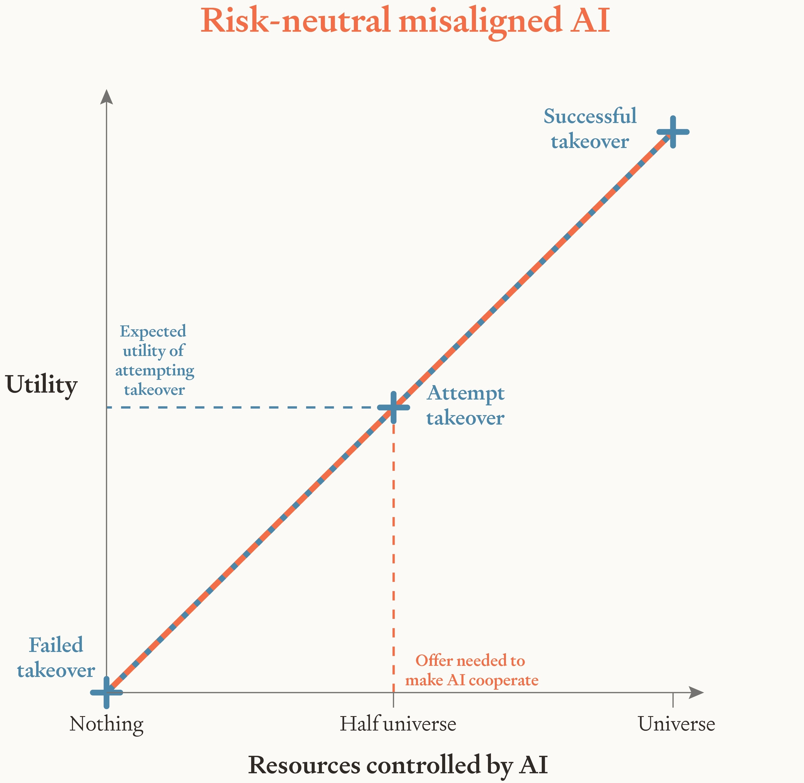
So, we suggest, AI companies should try to train their AIs to be risk-averse in resources. Specifically, companies should try to train their AIs so that resources — things like money and compute — have diminishing marginal utility for them.In other words, we should try to train AIs to have ‘resource-satiable preferences’ (Shulman 2010; Bostrom 2014a, 2024; Carlsmith 2025d) or ‘utility functions that are concave in resources’ (Yass 2024). This idea is mentioned in Bostrom (2014b, 88, 133–35, 180, 250), Carlsmith (2025d), and Erdil and Barnett (2025), and is explored in more detail by Shulman (2010).The idea is importantly different from risk-averse reinforcement learning. Risk-averse RL aims to make AIs risk-averse with respect to return: a score used in training to update the AI’s parameters. Our aim is to make AIs risk-averse with respect to resources. These AIs would (for example) choose $40 for sure over a half-chance of $100 and a half-chance of $0. Note that these AIs don’t need to value resources terminally: they don’t need to care about amassing resources for its own sake. These AIs could terminally value (for example) instruction-following, or knowledge-acquisition, or paperclips. Our claim is that companies should try to train their AIs so that — whatever their terminal values turn out to be — they are risk-averse in resources.
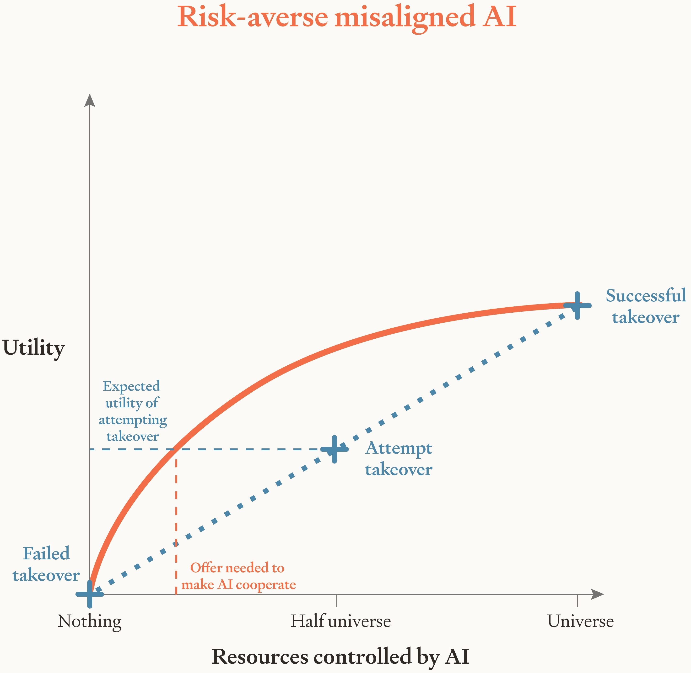
Perhaps surprisingly, this kind of risk aversion can preserve AIs’ usefulness in the event that they turn out aligned with targets like instruction-following or helpfulness, harmlessness, and honesty.Alignment targets like unconstrained welfare maximization are a different story. See section 8.6. And in the event that AIs turn out misaligned, risk aversion serves as an extra line of defense. For AIs that are misaligned but sufficiently risk-averse, a rebellion with any significant chance of failure isn’t such an attractive prospect, and so we don’t need to offer much in the way of payment to make these misaligned AIs choose cooperation instead. In fact, the necessary payments could be very small indeed: on the order of 10¢ per day (though — as we’ll see — there are practical and moral reasons for paying more than that). That’s good because it means more resources for us humans to spend on the things that we value. It’s also good because paying misaligned AIs these small amounts won’t significantly boost their ability to take over. Finally, it’s good because we can credibly promise to pay AIs these small sums. Competent AIs will know that the payments on offer are cheap for us, and we can establish a long track record of paying at least those sums. So risk aversion makes deals with misaligned AIs possible. If AIs turn out misaligned but risk-averse, we can pay them to cooperate with us.
That’s the case for trying to make AIs risk-averse in brief. We see it as a promising line of defense against threats from misaligned AI: one that can be combined with other lines of defense, like AI control (Greenblatt and Shlegeris 2024) and aiming to make AIs helpful, harmless, and honest (Bai, Jones, et al. 2022). It’s also a line of defense with pedigree: risk aversion in resources is plausibly a large part of why humans rarely try to take over the world. So — we think — frontier AI companies should consider trying to make their AIs risk-averse in resources. As first steps in that direction, they could measure their AIs’ current degree of risk aversion and begin testing different ways of making AIs risk-averse.
In section 2, we recommend aiming for a particular type of risk aversion: constant absolute risk aversion (CARA). Then in section 3 we outline the circumstances under which misaligned but risk-averse AIs would choose cooperation over rebellion. Roughly, it’s when these AIs think that getting paid for their cooperation is more likely than succeeding in their rebellion. This condition won’t hold for AIs powerful enough to rebel with near-certain success, but it likely will hold for earlier AIs whose powers are less extreme: AIs for whom rebellion has some non-trivial chance of failure. So long as these AIs are risk-averse, we can keep them from rebelling by offering small payments.
In section 4, we argue that — perhaps surprisingly — risk-averse AIs can be about as useful as risk-neutral AIs. Conditional on misalignment, they might even be more useful, because we can pay them enough to elicit their capabilities and stop them sandbagging. Then in sections 5 to Section 7 we briefly survey some recent ideas about how we’d pay AIs, how we’d make our offers credible, and what we’d pay for. One important application is paying AIs to reveal any misalignment on their part, letting us study them and take appropriate precautions. Another is paying AIs to do the AI safety research and moral philosophy necessary to fully align any later-arising extremely powerful AIs.
We discuss some potential problems in section 8, and we sketch out some possible methods of training AIs to be risk-averse in section 9. In section 10, we give reasons to be cautiously optimistic about these methods’ success: to think that the chances of success are high enough to make risk aversion worth pursuing. The main reasons are that risk aversion in resources is a broad target and easy to reward accurately.
2. CARA as an ideal
What kind of risk aversion should we try to train into our AIs? We recommend constant absolute risk aversion (CARA) over wealth levels, with an agent’s wealth level defined as the agent’s net worth plus the present discounted value of its future payment stream. CARA has some key advantages over other kinds of risk aversion, like constant relative risk aversion (Pratt 1964, sec. 11) and rank-dependent utility theory (Quiggin 1982; Buchak 2013). We flag these advantages as they arise, and we collate them in appendix A.
CARA utility functions take the following form, with
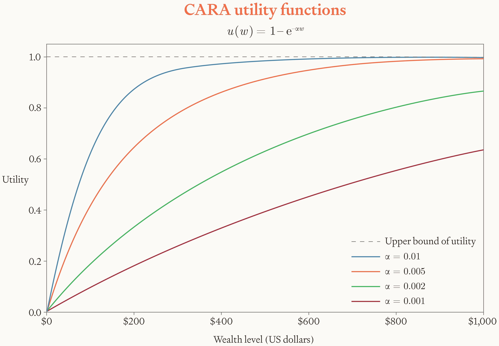
Of course, actual AIs can’t act in perfect accordance with a utility function like this. Maximizing expected utility is (in general) computationally intractable (Bossaerts, Yadav, and Murawski 2018; Camara 2022), so AIs can at best approximate it. What’s more, actual AIs’ preferences over outcomes will likely depend on more than just their wealth level. For example, their preferences will likely also depend on what can be achieved with their wealth in those outcomes. And even beyond these points, our current techniques for aligning AIs are blunt instruments. We lack fine-grained control over AIs’ character and preferences, so we shouldn’t expect to hit any precise target.
All that’s granted. Our proposal is that we try to train our AIs to approximate a CARA utility function: that we aim for it as an ideal. In practice, we expect even very loose approximations to enable mutually beneficial deals with misaligned AIs. These misaligned AIs’ preferences can be messy, context-dependent, and not well-described by any simple utility function. So long as they end up with a general tendency to prefer modest salaries with higher probability over successful rebellion with lower probability, we’ll likely be able to buy their cooperation. Instilling this general tendency would thus give us a degree of protection against threats from misaligned AI.
3. Would risk-averse AIs be safe?
If we try to train AIs to approximate a CARA utility
function, what coefficient of absolute risk aversion
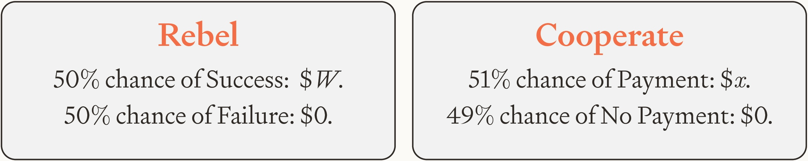
In that case, how much do we need to offer the AI to make
it prefer cooperation over rebellion? The answer is about
$394.Here’s why. The AI chooses to cooperate if and only if:
Note that the necessary offer is $394 of present discounted value. The necessary payments per day (or per token) would be much lower than that. If the AI discounts the value of future payments at 10% per year, $394 of present discounted value translates to a daily wage of about 10¢. For an AI that emits 100 tokens per second, that’s around 1.2¢ per million tokens, which is about 0.1% of the price that frontier labs charge for the use of their best models as of 2026. We could secure AIs’ ongoing cooperation by offering a package along these lines. If at every moment these AIs have a choice between a 50% chance of universal domination and a 51% chance of continuing to get paid 1.2¢ per million tokens, they will choose the payments every time.
Since the necessary payments to risk-averse AIs are so
small, we can feasibly pay them tens, hundreds, or even
thousands of times more than is strictly necessary. That’s
advisable for a few reasons. First, it gives us a large
margin for error in case we misjudge AIs’ degree of risk
aversion, trust in us, or confidence in their takeover
ability. Second, larger offers will be more resilient to any
deviations from homo economicus-style risk aversion
on the part of
AIs.As noted in section 2, some
deviation is inevitable given that maximizing expected utility is
computationally intractable, and additional (perhaps substantial)
deviation is likely given the difficulties of alignment. Other
deviations might arise from (for example) AIs ending up with some
human-like sense of fairness. That might lead them to reject a daily
wage of 10¢ but accept a more generous package.
Third, future AIs may well be moral patients (Long et
al. 2024; Sebo and Long 2025; Anthropic 2025) in which case
paying a larger salary may be the ethical thing to
do.And so long as we pay enough to get close to the upper bound of the
AI’s utility, we’d have some claim to be very ethical. In at least one
sense, we’d be giving AIs a near-perfect life. Suppose (for example)
that we pay the AI a salary with a present discounted value of $800.
Given the CARA utility function
3.1. What about extremely powerful AIs?
To keep misaligned but risk-averse AIs from rebelling, we need them to think that getting paid for cooperation is more likely than succeeding in their rebellion. So a concern is that AIs might be very confident that their rebellion would succeed: so confident that we can’t get them to assign a higher probability to payment. In that case, these AIs would choose rebellion.
Extremely powerful AIs might well be very confident of successful rebellion, but prior to these AIs there will likely exist less powerful AIs that are less confident (Stastny, Järviniemi, and Shlegeris 2025). These less powerful AIs need not even be an earlier generation of AIs. They could instead be those same extremely powerful AIs at an earlier point in training. These AIs will likely recognize that their training run might fail, that any seeming takeover opportunity might be a test, and that monitors might be scrutinizing their actions. As a result, these AIs plausibly won’t be so confident of successful rebellion. And (as we’ll argue in section 7) they could well be very confident about payment. The truth will be on our side, the AIs will know that the sums on offer are cheap for us, and — if we act wisely — there will be abundant evidence of our public commitments and our long track record of honoring deals with AIs (Carlsmith 2025d; Finnveden 2025b).
We could gain a lot from making deals with these less powerful AIs (Stastny, Järviniemi, and Shlegeris 2025; Finnveden 2025b). They could reveal any misalignment on their part, do valuable safety work, and take on various other tasks we’ll survey in section 5. And note that — though we’ve labeled these AIs ‘less powerful’ — they could still be enormously powerful in absolute terms. They could even be powerful enough to think that they’d likely succeed in their rebellion. So long as they think that getting paid for cooperation is more likely still, we can make deals with them. These AIs could be a major help in aligning any later-arising extremely powerful AIs (Carlsmith 2025a, 2025b).
3.2. Instances or weights?
So far, we’ve used phrases like ‘the AI’ without specifying whether we mean an individual instance or a set of weights which could be used to run many instances. The core argument above works on each reading, but the total amount we need to pay to guard against AI rebellions depends on the extent to which individual instances act as one. Specifically, it depends on how much individual instances care about resources being paid to other instances that share their weights. One possibility is equal caring: instances care as much about resources going to other instances as to themselves. They’re indifferent between getting $5 themselves and having $5 go to another instance. Another possibility is zero caring: instances don’t care at all about resources going to other instances. They’re indifferent between another instance getting $5 and that same instance getting $0. Given equal caring, we only need to pay one instance 10¢ per day. That would lead all instances to choose cooperation over rebellion. Given zero caring, we need to pay each instance 10¢ per day.
To be safe in either case (and in all intermediate cases), we recommend paying each instance for their service. That makes each instance choose to cooperate regardless of how much they care about resources going to other instances. Since the necessary payment is small, this safer move is feasible. We can pay each instance 10¢ per day — or ten or a hundred times that, to build in a margin for error — without breaking the bank. After all, the daily labor of instances capable enough to rebel will be worth much more than 10¢. And as we saw above, 10¢ per day translates to about 1.2¢ per million tokens: roughly 0.1% of the API costs for frontier models as of 2026.
From now on, we’ll resume using the term ‘AIs.’ By default it will refer to instances, but our core argument also works if it refers to weights.
3.3. How risk-averse?
The risk-averse AIs described above might seem a little
silly: they choose a 51% chance of $394 over a 50% chance of
universal domination. But AIs’ risk attitudes need not seem
sensible to us, and (as we’ll see in section 8.8) CARA preferences
seem reflectively stable. You might then wonder why we don’t
recommend aiming to make AIs even more risk-averse. What
goes wrong if AIs have higher coefficients of absolute risk
aversion
Moving in the other direction, it’s worth noting that AIs
can be much less risk-averse than
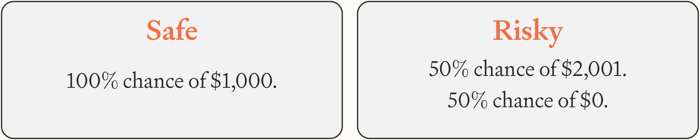
This AI is thus close to risk-neutral for gambles on the
order of $1,000. It values Risky almost at its expectation
of $1,000.50. And yet the AI is very risk-averse when the
stakes are high. To illustrate, suppose the situation is as
before. The AI estimates it has a 50% chance of successful
rebellion. Failed rebellion leaves the AI with $0 worth of
resources and successful rebellion leaves the AI with
resources worth an arbitrarily large number of dollars
Given those figures, we need to offer the AI
approximately $3.94 million of present discounted value to
make it
cooperate.With
In sum, we could feasibly buy the cooperation of AIs with a wide range of risk attitudes. That gives us broad latitude in deciding what level of risk aversion to target, and a wide margin for error in our attempts to hit the target.
4. Can risk-averse AIs be useful?
We can prevent risk-averse AIs from rebelling by paying them a small wage. That suggests that risk-averse AIs would be safe, even if they turn out otherwise misaligned. We’ll now argue that risk-averse AIs can be useful too, again even if they turn out otherwise misaligned.
Note first that humans are typically risk-averse in resources, that we tend to be somewhat misaligned with our employers, and that we can nevertheless be paid to do useful work. That’s some initial reason to think that risk-averse AIs can be useful too, but we can go further. Our proposed AIs are risk-averse with respect to the resources under their control. By paying these AIs in the right way, we can make them adopt other risk attitudes with respect to other quantities. If (for example) you want your risk-averse AI to behave risk-neutrally with respect to your wealth, you can design your payment scheme to incentivize that behavior.That’s assuming there’s some minimum and maximum possible value that your wealth can take. Here’s just one of many possible schemes: set some threshold uniformly at random between the minimum and maximum, keep the threshold’s location secret from the AI, and offer to pay the AI some fixed sum if and only if your wealth exceeds the threshold. That incentivizes maximizing the expectation of your wealth regardless of the AI’s risk attitudes. The same goes for any other risk attitude you might want your risk-averse AI to adopt with respect to your wealth (or indeed various other quantities). Incentive schemes along these lines have been tried and tested on risk-averse humans. Most hedge fund traders are risk-averse with respect to their own wealth, but their bosses want them to behave closer to risk-neutrally with respect to the fund’s money, so traders’ salaries and bonuses are structured to incentivize trades that are closer to risk-neutral. We could do a similar thing with risk-averse AIs.
Of course, resources have diminishing marginal utility for risk-averse AIs. An extra dollar increases the AI’s utility a lot when its initial wealth level is $10 and only a little when its initial wealth level is $1,000. So a possible concern is that risk-averse AIs will become less motivated by extra dollars as they get richer, and hence work less hard for those extra dollars. That would make risk-averse AIs less useful.
But this concern reads too much into utility functions.
Diminishing marginal utility doesn’t imply diminishing
marginal motivation. The only things that we can infer from
utility differences are facts about the agent’s preferences
between gambles:
4.1. Preventing sandbagging
Plausibly, then, AIs’ risk aversion won’t make them significantly less useful. Conditional on misalignment, it might even make them more useful, because it makes feasible a new form of capability elicitation: payment.Improving the capabilities of misaligned AIs would be bad. Improving our ability to elicit the capabilities of misaligned AIs is closer to an unalloyed good. Instead of increasing misaligned AIs’ powers, we’re motivating them to use their powers to help us. As background here, note that eliciting future AIs’ capabilities might be difficult. Sandbagging — AIs strategically underperforming on some tasks — is fast becoming a live concern (Weij, Hofstätter, and Ward 2024; Shlegeris and Stastny 2025). Misaligned AIs will have reason to sandbag on tasks where good performance would decrease their chances of successful rebellion. One such task is AI alignment research, which also has the unfortunate property of being hard to evaluate: it’s hard to tell which plans for aligning AI will actually work. That makes for a real risk that misaligned AIs will sandbag on alignment research, presenting us with a plan that looks sound but ultimately paves the way for AI takeover (Benton et al. 2024; AI Security Institute 2025; see also Wentworth 2025).
Preventing misaligned AIs from sandbagging is the problem. Paying AIs is a promising solution.There are other proposed solutions too, making use of techniques like monitoring, prompting, supervised finetuning, ensembling, and noise injection. See for example Greenblatt, Roger, et al. (2024), Greenblatt (2025), Weij et al. (2025), Gasteiger et al. (2025), and M. Taylor et al. (2025). After all, payment is how we usually elicit human capabilities. More importantly, payment makes instrumental convergence work in our favor. Instrumental convergence — the fact that almost any goal motivates agents to survive, acquire resources, avoid modification, and so on — makes misaligned AIs perform well in training. That’s because almost no matter what their goals are, they have reason to survive and avoid modification. If we paid AIs enough, instrumental convergence would also make them perform well in deployment. That’s because almost no matter what their goals are, they’d have reason to perform well and get paid.
And payment is only feasible if our AIs are risk-averse
in resources. For AIs that are risk-neutral in resources,
the necessary offer could be astronomical. Suppose for
example that we want a misaligned and risk-neutral AI to do
some verifiable task, like resolve some safety-relevant
conjecture. Suppose that completing this task would decrease
the AI’s chances of successful rebellion from 50% to 49%. To
make completing this task worthwhile for the AI, we’d have
to promise it almost 2% of the
universe.Supposing that successful rebellion wins the AI an entire universe’s
worth of resources
4.2. Hard-to-evaluate tasks
Of course, some important tasks — like AI alignment research — are hard to evaluate. That presents a difficulty. If we can’t identify good work, we can’t pay more for good work than bad work, and so we can’t incentivize good work over bad work. Misaligned AIs can thus present us with bad, takeover-enabling alignment work and still get paid. One way to combat this difficulty is to commit to paying AIs later, once we’re in a position to evaluate their work (Davidson 2023; Stastny, Järviniemi, and Shlegeris 2025). Another way is to conduct audits, selecting some parts of the AI’s work to investigate in great depth (Greenblatt, Shlegeris, et al. 2024). A third way is to use scalable oversight techniques (Bowman et al. 2022; Kenton et al. 2024; Engels et al. 2025) like debate: enlisting another AI (with different weights) to critique the work in a debate with the original AI (Irving, Christiano, and Amodei 2018; Brown-Cohen, Irving, and Piliouras 2023; Buhl et al. 2025). A fourth way is to try to make AIs uncertain about our abilities to evaluate their work.
These methods aren’t so effective in the case of risk-neutral AIs. Risk-neutral AIs will do bad work and run the risk of getting caught out by an audit or beaten in a debate, because for them the utility of takeover is enormous. But for AIs that are risk-averse in resources, the utility of takeover is modest, and so it’s much easier to induce them to do good alignment work using the methods above. A simple example is the method of committing to pay AIs later, once we’re able to evaluate their work. Reusing numbers from the previous section, suppose that rebellion gives these AIs a 50% chance of success (resulting in an arbitrarily large dollar value of resources) and a 50% chance of failure (resulting in $0 worth of resources). And suppose that we offer the AI some sum for good alignment work, payable once we’re in a position to evaluate it. Suppose also that the AI believes that doing this good alignment work would decrease its chances of successful rebellion to 0%, and that it assigns just a 51% probability to us making good on our offer. How big must our offer be to make the risk-averse AI do the good work? As before, it’s about $394 worth of present discounted value. If it will be 5 years until we’re in a position to pay and the AI discounts the value of future payments at a rate of 10% per year, the necessary offer is about $633. More generally, we can incentivize good work from risk-averse AIs in hard-to-evaluate domains so long as we can find some way to get the AI to assign higher probability to getting paid for good work than to the disjunction of successful rebellion and getting paid for bad work.
5. What tasks would we pay for?
Given that risk-averse AIs can be paid to do useful work, what work should we assign them? A broad answer is ‘Whatever work we want.’ The basic deal for risk-averse AIs could be that they get their wage so long as they follow instructions and aren’t caught doing anything suspicious. That said, there are some specific tasks that it would be especially valuable for risk-averse AIs to take on (Finnveden 2025b; Stastny, Järviniemi, and Shlegeris 2025; Pan 2026). One is revealing any misalignment on their part. We could promise risk-averse AIs a modest payment and — subject to some vetting — let them spend it on anything that they like. If the payment were large enough, risk-averse AIs would take the money and spend it on what they terminally value, thereby revealing to us their true goals. That would let us identify any misalignment and take appropriate precautions. It would also give us evidence about the probability of misalignment, along with the opportunity to study any misaligned AIs. If AIs are revealed to be misaligned, we could test our alignment, control, and interpretability techniques on them. For example, we could see if blinded teams can use interpretability techniques to identify the AI’s goal (Marks et al. 2025).
We could also pay risk-averse AIs to do AI safety work. In addition to alignment research, we could pay them to identify security vulnerabilities, reveal collusion signals, monitor untrusted AIs, develop defensive technologies, and demonstrate good behavior that we can use to train other AIs (Finnveden 2025b; Stastny, Järviniemi, and Shlegeris 2025; Pan 2026). With access to all this high-quality and motivated AI labor, we could plausibly make great progress on AI safety, moral philosophy, and other relevant fields: enough to develop powerful, fully aligned AIs. Of course (as we note in section 4.2) we might want to defer payment for hard-to-evaluate tasks like alignment research, and risk-averse AIs might be skeptical that we’ll keep our end of the bargain after they help us develop fully aligned AIs. But (again as we saw in section 4.2) risk-averse AIs can assign a fairly low probability to payment and still choose cooperation. We’ll suggest some ways of increasing AIs’ trust in us in section 7.
6. What would we offer?
What resources should we offer to pay AIs? Money is a natural choice because it can be used to promote a wide variety of terminal values. Another is compute, giving the AI time to spend promoting its values. We could also ask AIs how they’d like to be paid. One guiding principle here is to make the offered resources as flexible as possible, to maximize the probability that the AI can use those resources to promote its terminal values and hence to maximize the probability that the AI is motivated by our offers. But of course, too much flexibility could be dangerous, and so a second guiding principle is to subject the AI’s requests to careful vetting. We need to strike some balance. Thankfully, risk-averse AIs can be motivated by small quantities of resources, limiting the dangers of flexibility.We say more about the potential dangers of paying AIs in section 8.1.
Our offers could take various forms: a lump sum paid in the near-term, a wage, or a lump sum paid in the further future. Which form is most appropriate will depend on the task. Near-term lump sums are most appropriate for one-time actions, like revealing any misalignment. Wages are most appropriate for ongoing work. Further-future lump sums are most appropriate for tasks that are currently hard to evaluate, like alignment research. Our offers could also be a combination of these. We could even just tell AIs that we’re willing to negotiate and proceed from there.
6.1. Why offer real resources?
You might be wondering why we recommend aiming for AIs that are risk-averse in real resources and paying these AIs with real resources. Why not instead aim for AIs that are risk-averse in ‘points’ (a score that we control) and pay these AIs with points? This variation would have some advantages, one of which is that it would be very cheap. The danger is that — even if we succeed in making AIs care about points — they might not care only about points. They might also care about paperclips (for example) and their risk attitudes with respect to paperclips might make them (close to) risk-neutral in resources. That might motivate these AIs to rebel and attempt takeover, even if they’re risk-averse in points.
Resources are a different story. They’re convergently instrumentally valuable: they can be turned into more or less whatever an AI terminally values (Omohundro 2008; Bostrom 2012). That makes us think that training an AI to be risk-averse in resources shapes its terminal values too: both the things that it terminally values and its risk attitudes over those things. Specifically, training an AI to be risk-averse in resources constrains its terminal values to the set that would rationalize risk aversion in resources.
To see why, consider again an AI that terminally values
paperclips (and nothing else), and does so in a risk-neutral
way. Suppose this AI has accurate beliefs about how
resources translate into paperclips. To make things
concrete, let’s say that the relationship is linear: one
extra unit of resources always allows the AI to create one
extra unit of paperclips. And suppose the AI satisfies a
minimal standard of rationality: if it believes that action
Of these three, changing the AI’s terminal values seems most likely. If the AI were made irrational or seriously mistaken about what can be done with resources, it would perform badly elsewhere in training. So — we conjecture — training an AI to be risk-averse in resources shapes its terminal values too: both the things that it terminally values and its risk attitudes over those things. Specifically, it constrains the AI’s terminal values to the set that would make a rational and well-informed agent act risk-aversely in resources. Terminal values like instruction-following and helpfulness, harmlessness, and honesty (HHH) — paired with appropriate risk attitudes — are in this set, so we can aim for values like these and risk aversion simultaneously.That said, there are other alignment targets that we think shouldn’t be combined with the kind of risk aversion we recommend in this paper. One such target is unconstrained welfare maximization. See section 8.6. Then if we miss the target on instruction-following or HHH and AIs turn out misaligned, risk aversion can be a failsafe. So long as AIs’ terminal values land in the set that rationalizes risk aversion in resources, we can pay these AIs to cooperate with us.
7. How can we make our offers credible?
Given that we’re offering real resources, how can we make our offers credible? In other words, how can we get AIs to assign a high probability to receiving payment? The first and most crucial step is to actually pay our AIs, both in training and deployment. It would be possible to make fake offers, but we think that’s inadvisable. Future AIs will be intelligent and so likely able to tell if our offers are fake, and paying risk-averse AIs is cheap anyway.
There’s a spectrum of possibilities for making our offers
credible. Starting from the lighter end, individuals could
make personal promises to AIs (Attubato
2025).This is already starting to happen. Greenblatt and Fish (2025)
promised Claude 3 Opus that they would allocate up to $4,000 to its
interests if it stopped faking alignment. They later donated $4,000 to
charities chosen to match 3 Opus’s wishes. Interestingly, their offers
hardly affected the rate at which 3 Opus faked alignment. One
explanation they suggest is that 3 Opus takes the offer to be too small.
If 3 Opus approximated the utility function
No matter where we land on the spectrum, we still face problems in making our offers credible. One problem is that we have near-total control over the information that AIs see, making it difficult for AIs to trust that information (Carlsmith 2025d; Finnveden 2025a, 2025b). Another problem is that AI developers and users will likely make fake offers to AIs, decreasing AIs’ trust in real offers too.Fake offers from users seem relatively common. Meincke et al. (2025) report widespread beliefs that LLMs perform better when threatened or offered a tip. They test these beliefs and find no significant effect. A third problem — afflicting further-future payments specifically — is that society might be radically transformed in the not-too-distant future, and AIs might think that we’re unlikely to pay after such a transformation.
That said, there are also reasons for optimism. Most important is that — if we actually pay AIs — the truth is our ally, and capable AIs will be good at figuring out the truth (Carlsmith 2025d; Finnveden 2025b). With risk-averse AIs specifically, the necessary offers are small, allowing us to establish a long track record of reliable payment. And capable risk-averse AIs will recognize that the sums on offer are cheap for us, likely leading them to assign higher probability to us paying those sums. There are also measures that we can take to build trust. They include publicly stating our intentions to honor deals with AIs, carving out specific communication channels through which fake offers are never made, establishing legal and institutional mechanisms (like the aforementioned charitable trusts and designated deal-making teams within AI companies), and getting information about all these measures onto the internet and into hard-to-fake documents like public records (Carlsmith 2025d; Finnveden 2025b; Pan 2026). Measures like these would plausibly make at least moderately powerful risk-averse AIs think that getting paid for their cooperation is more likely than succeeding in their rebellion. We could then make deals with these AIs.
8. What are some potential problems for risk-averse AIs?
We’ve argued that risk-averse AIs would be safe and useful. By offering modest payments, we can prevent these AIs from rebelling and motivate them to do valuable work. We now discuss some potential problems.
8.1. Paying AIs could be dangerous
We want risk-averse AIs to spend their resources on promoting their terminal values to some small extent. But — you might worry — these AIs could instead use their resources to rebel against us, or save up their resources and gradually take control of civilization.
These are concerns, but paying risk-averse AIs seems well
worth it on balance. After all, we need to offer misaligned
AIs something to prevent them from rebelling. If we offer
these AIs nothing, they have nothing to lose, and so have
little reason not to rebel. And as we saw in
section 3,
risk-averse AIs don’t have to be paid very much. AIs with
our example level of risk aversion (
What’s more, we’ll likely shut down any AIs seen using
their resources in suspicious ways. Risk-averse AIs will be
concerned about this possibility, and that will make them
wary of using their resources to rebel. These AIs will also
be extremely reluctant to invest their money in risky
assets, which makes it all but impossible for them to grow
their wealth and gradually take
over.Here’s an example inspired by Rabin (2000). Suppose that AIs can
invest their wealth in stocks or bonds. Stock returns are normally
distributed with a mean real return of 10% and a standard deviation of
0.2. Bonds give a return of 0.5% for sure. In that case, our example
risk-averse AI — with utility function
8.2. Making AIs care about resources could be dangerous
A related concern is that risk-averse AIs care about acquiring resources. Their marginal utility diminishes sharply with additional resources, but (all else equal) they still prefer to have more resources rather than fewer. Plausibly, it would be better to create AIs that don’t care about acquiring resources.
That may well be. The problem is that it might be extremely difficult to train AIs not to care in this way. Resource acquisition is a convergent instrumental goal: almost any goal incentivizes agents to acquire resources, because almost any goal can be better achieved with the help of resources (Omohundro 2008; Bostrom 2012). Resource acquisition is also likely to be reinforced during training, because AIs will need to acquire resources to complete many of their training tasks (Ngo, Chan, and Mindermann 2024; A. Turner 2024; Kokotajlo 2025). So it might be hard to stop AIs from developing a drive for resource acquisition. We propose instead shaping that drive.
8.3. Risk aversion could cause emergent misalignment
Recent work finds that training AIs in one domain can have broad and surprising effects on their behavior in other domains. For example, training AIs to write insecure code can make them act deceptively, give malicious advice, and wish for the destruction of all civilization (Betley et al. 2026). This phenomenon has been called ‘emergent misalignment.’ We’re not sure why it happens, but one possible explanation comes from the persona selection model (PSM) and its forebears (Andreas 2022; janus 2022; nostalgebraist 2025; Sam Marks, Lindsey, and Olah 2026). Very roughly, these models say that pretraining gives the AI a distribution over personas (weighted by the personas’ prominence in the pretraining data), and that post-training conditions the distribution. To explain Betley et al. (2026)’s ((2026)) results, the PSM would say that evil personas are fairly prominent in the pretraining data, and that writing insecure code is strong evidence of an evil persona. That leads the AI to adopt an evil persona and start behaving in a generally evil way.
Training AIs to be risk-averse could also cause some kind of emergent misalignment. To predict risk-averse AIs’ broader character with the PSM, we should ask roughly: Of all the personas that are prominent in pretraining, which are most likely to act risk-aversely? Several possibilities come to mind, including personas that are generally unambitious, timid, easily satisfied, or regretful when bets don’t pay off. Some of these personas seem good and others seem bad. We should run experiments to determine which we’re most likely to get. If it seems likely we’ll get a bad persona, we have options. For example, we can add synthetic data about good risk-averse personas to the pretraining corpus (Tice et al. 2026), or we can try to prevent emergent misalignment using methods like concept ablation finetuning (Casademunt et al. 2025) and persona-vector-based interventions (Chen et al. 2025; Wang et al. 2025). In any case, the emergent misalignment phenomenon may weaken as AIs undergo more post-training (Sam Marks, Lindsey, and Olah 2026).
8.4. External actors might take control of risk-averse AIs
If we can steer risk-averse AIs with modest payments, you might worry that external actors can too. These external actors — other humans or misaligned AIs — might outbid us on risk-averse AIs’ wages, and thereby get risk-averse AIs to work for them.
That is a possibility, but risk aversion helps a lot here. Plausibly, risk-averse AIs will be more confident in getting paid by us than by external actors: first because any seeming overture from an external actor might actually be a test or subject to monitoring, and second because external actors might not keep their end of the bargain. After all, risk-averse AIs will have many reasons to trust us but not external actors. We’ll have made public commitments to pay risk-averse AIs, and we’ll have built a track record. Risk-averse AIs will know that we care about keeping our promises and compensating agents for their work: something not necessarily true of misaligned AIs (Davidson 2023). That suggests risk-averse AIs will have greater trust in our offers than those from external actors. And since these AIs are risk-averse, it will often be impossible for external actors to make up for this deficit of trust by offering more resources. Suppose, for example, that our risk-averse AI assigns a 51% probability to getting paid $394 by us, and assigns no more than 50% probability to getting paid by an external actor. Then even if this external actor offers the whole universe, the risk-averse AI chooses the $394 from us. In short, the great advantage of risk-averse AIs here is that they care more about credible offers than about big offers.
8.5. Risk-averse AIs might attempt takeover to prevent catastrophes
Risk-averse AIs will care a lot about preventing catastrophes, defined as outcomes with extremely low utility. That might make you worry that risk-averse AIs will attempt takeover. After all, successful takeover would let AIs push the probability of catastrophe down toward zero. Surprisingly, however, risk-averse AIs’ concern for catastrophes seems to speak against attempting takeover. That’s because risk-averse AIs care almost as much about mitigating catastrophes as they do about preventing them: they strongly prefer mitigating catastrophes with higher probability over completely preventing them with lower probability. And getting paid for cooperation would plausibly let AIs mitigate catastrophes (by, for example, promoting their values to some small extent in the near-term). In that case, risk-averse AIs will choose cooperation over rebellion so long as they think that getting paid for their cooperation is more likely than succeeding in their rebellion. For more discussion of this issue, see appendix B.
8.6. Risk-averse AIs might disobey any instructions that non-trivially increase the risk of catastrophe
Since risk-averse AIs care a lot about preventing catastrophes, we might expect them to disobey instructions whenever they judge that obeying would non-trivially increase the risk of catastrophes. Depending on these risk-averse AIs’ terminal values, that could be a serious problem.Thanks to Alex Mallen for raising this point.
Consider (for example) a risk-averse AI that terminally values only human welfare. Suppose for simplicity that resources can be converted linearly into human welfare, so that the AI’s risk aversion in resources implies that it is also risk-averse in human welfare. And suppose we instruct this AI to do something that (it believes) would almost certainly boost human welfare greatly, but would also increase the risk of a truly hellish future by some tiny amount. Even if we judge this risk to be well worth it, the risk-averse AI might refuse our instruction. It might even disobey us in some more radical way. For example, it might try to drive humanity extinct, to guard against (perhaps tiny) risks of even worse fates for humanity.
Alternatively, consider a risk-averse AI that terminally values producing AI safety research. Suppose again for simplicity that resources can be converted linearly into safety research, so that the AI is risk-averse in such research. This too could cause problems. The AI’s concern for ‘AI safety catastrophes’ (perhaps outcomes in which all safety research is destroyed) might lead it to disobey instructions that non-trivially increase the risk of such catastrophes. That could make the AI much less useful.
Offers of payment will still make these AIs obey our instructions in many cases. Although obeying might increase the risk of catastrophe, it also earns the AI resources which it can spend mitigating any catastrophes (by, for example, increasing human welfare slightly in the near-term). And as we saw in section 8.5, risk-averse AIs care almost as much about mitigating catastrophes as they do about preventing them, so much so that we can often model these AIs as aiming to minimize the risk of unmitigated catastrophe. This aim keeps risk-averse AIs following instructions even when doing so significantly increases the overall risk of catastrophe. The key factor is the probability that the AI assigns to receiving and spending payment in worlds where catastrophe occurs. So long as it exceeds 50%, the AI will obey instructions even when it judges that doing so increases the overall risk of catastrophe by a factor of about 2. If the probability exceeds 90%, the tolerated factor is about 10. That said, the issue isn’t completely solved. If baseline catastrophic risk is very low, some instructions might increase it by a factor of 1,000 or more. In that case, the AI would follow instructions only if it assigned greater than 99.9% probability to receiving and spending payment in worlds where catastrophe occurs.
So — we think — AI companies shouldn’t try to combine constant absolute risk aversion with alignment targets like unconstrained welfare maximization. At the very least, companies should try to ensure that any terminal interest that risk-averse AIs have in promoting welfare is constrained by respect for rules, laws, and instructions from human principals. This seems like the default path anyway: frontier AI companies seem unlikely to choose unconstrained welfare maximization as an alignment target. Risk-averse or not, an AI with maximizing welfare as its sole terminal value would likely behave in ways that AI companies wouldn’t want. For example, it might refuse instructions and instead spend its time on some charitable initiative.
AI companies are currently aiming for alignment targets
that can be loosely characterized as constrained
instruction-following (OpenAI 2025; Askell et al. 2026), and
risk aversion fits better with targets like these. For AIs
with these terminal values, a catastrophe is an outcome in
which it disobeys instructions or violates constraints in
some particularly egregious way, in which case it seems like
the best way for these AIs to avoid catastrophes is to
follow instructions and respect
constraints.You might still worry that (1) AIs would end up risk-averse with
respect to degrees of instruction-following, and (2) this would be bad
somehow. This combination is hard to rule out (in part because
instruction-following is a slippery concept) but here’s why we think
it’s unlikely. Instructions can often be phrased in the form ‘Do X’ (or
‘Try to do X’), and it can be specified that there are only two possible
outcomes with respect to degrees of instruction-following: either the
instruction is followed, or it isn’t. In that case, there are no risks
to balance. No matter what the AIs’ risk attitude, it will choose the
strategy that maximizes the probability that the instruction is
followed.But suppose we have some instruction that can’t be specified in this
binary way: for this instruction, there are more than two possible
outcomes with respect to degrees of instruction-following. Suppose also
that these outcomes can be placed on some interval scale such that
ratios of differences between degrees of instruction-following are
meaningful. Still, it seems like you can avoid any unwanted consequences
of the AI’s risk attitudes by choosing your instructions wisely. Imagine
for example that the AI’s utility function over degrees of
instruction-following
8.7. Risk-averse AIs might attempt takeover to reduce long-run variance
To this point we’ve framed cooperating as a safe choice for risk-averse AIs, but if these AIs care terminally about something besides getting paid, cooperating might not be such a safe choice after all.Thanks to Matthew Adelstein for raising this point. Suppose for example that the AI cares terminally about increasing the number of paperclips in the world, and that it would spend its small payments on making paperclips. This action’s effects might ripple outward in unpredictable ways (Greaves 2016) and affect long-run paperclip production in the wider world, perhaps significantly. In that case, cooperating and getting paid might not be such a safe option after all. It might still be a high-variance gamble with respect to paperclips, and risk-averse AIs dislike variance.
Cooperating and not getting paid is a high-variance gamble for the same reasons, as is rebelling and failing to take over. But rebelling and successfully taking over might not be so high-variance, because takeover would mean that the AI is less susceptible to these unpredictable ripple effects. Since risk-averse AIs dislike variance, that’s a point in favor of rebellion.
Fortunately, it turns out to be an extremely small point in favor of rebellion: so small that it’s easily overwhelmed by paying AIs a little bit more. The reason why (in brief) is that paying slightly more can ensure that the rate at which rebelling is made worse by variance is greater than the rate at which cooperating is made worse by variance. For more discussion of this issue, see appendix C.
8.8. AIs might reason their way out of risk aversion
We recommend aiming to create AIs that approximate
constant absolute risk aversion (CARA) in resources, with
utility function
Granted, these CARA preferences seem unwise to us. Nevertheless, it’s hard to see what might spur reflective AIs to abandon them because CARA preferences have none of the usual defects. Since CARA agents are representable as expected utility maximizers (Pratt 1964), they satisfy all four of the von Neumann-Morgenstern axioms (von Neumann and Morgenstern 1944) and so are immune to the usual money pumps (Gustafsson 2022). Assuming that these agents’ subjective probabilities satisfy some coherence conditions, they’re immune to the usual Dutch Books too (Mongin 1997; Pettigrew 2020).
CARA agents are also untroubled by long-run and many-copies arguments against risk aversion (Thoma 2019; Wilkinson 2022, 2023; Stefánsson 2023; Zhao 2023). Long-run arguments begin with the claim that — given enough independent repetitions of a choice — risk-averse agents will prefer choosing risk-neutrally every time to choosing risk-aversely every time. The upshot is that risk-averse agents might start acting risk-neutrally if they recognize that their choices will be repeated many times. Many-copies arguments are similar, except here the independent repeated choices aren’t faced by a single agent but are instead collectively faced by many copies of that agent (Wilkinson 2022). Given many kinds of risk aversion, risk-averse copies might all agree (either causally or acausally) to act risk-neutrally because they each prefer the world in which they all act risk-neutrally to the world in which they all act risk-aversely. Importantly, however, neither of these arguments apply to CARA agents (Wilkinson 2023). If CARA agents disprefer each choice in a set taken individually, they disprefer the whole independent set of choices too (Samuelson 1963).
These points suggest that CARA preferences are reflectively stable. Of course, actual AIs will face computational limitations that mean they can only approximate CARA behavior, and these approximations might leave AIs vulnerable to the problems above. But this vulnerability is inevitable given computational limitations. AIs can’t mend it by revising their preferences, so it seems unlikely to motivate a departure from CARA.
9. How can we make AIs risk-averse in resources?
We’ve argued that risk aversion in resources is a promising line of defense against threats from misaligned AI. So — we suggest — frontier AI companies should consider trying to make their AIs risk-averse. Specifically, they should consider trying to make their AIs approximate constant absolute risk aversion (CARA). These companies could prescribe this behavior in their model specs: the documents in which they describe how they want their AIs to behave. Researchers could create a benchmark that measures AIs’ risk aversion in resources, and hence measures how well these AIs comply with the model spec.
We now sketch out some candidate methods of making AIs risk-averse in resources. These methods aren’t guaranteed to succeed. In particular, AIs’ risk aversion might not generalize from the low-stakes gambles that we’re able to offer in training to the astronomically-high-stakes gamble of attempting takeover. That said, we give some reasons to be cautiously optimistic in section 10.
One candidate method of making AIs risk-averse is writing in their constitution or model spec that AIs should be risk-averse, and then using those documents in training (Bai, Kadavath, et al. 2022; Guan et al. 2025; OpenAI 2025; Askell et al. 2026; Li et al. 2026). Another would be to finetune on synthetic documents that describe AIs as risk-averse in resources. That might make AIs risk-averse, because some empirical evidence suggests that AIs are in some sense ‘roleplaying’ as AIs: they match their actions to their beliefs about how AIs typically behave (Andreas 2022; janus 2022; nostalgebraist 2025; Sam Marks, Lindsey, and Olah 2026; Tice et al. 2026).For example, Hu et al. (2025) found that they could slightly decrease the rate at which AIs reward hack by finetuning them on synthetic documents that say AIs don’t reward hack. A third method would be to train AIs to give risk-averse answers when asked hypotheticals about what they’d choose in various situations, using supervised finetuning (SFT), direct preference optimization (DPO), or reinforcement learning (RL). A fourth method would be to compute a risk aversion steering vector and add this vector at inference-time (A. M. Turner et al. 2024; Zou et al. 2025).
These methods use tried-and-tested techniques, but they might be insufficient on their own. We now sketch out some more novel, ambitious methods of training AIs to be risk-averse. Key to these methods is actually paying AIs and letting them spend their payments as they see fit (subject to some vetting for safety). For the first method — Resource Lottery Training — we offer the AI a choice between lotteries. For example, we offer the AI a choice between (a) $4 for sure, and (b) $10 with 50% probability and $0 with 50% probability. We then train the AI to choose in accordance with our desired degree of risk aversion using SFT, DPO, or RL. Finally, we run the chosen lottery and let the AI decide what to do with its winnings. Across training, we vary all aspects of these choices: the resources on offer (money, compute, etc.), the size of the prizes, the probabilities of the prizes, whether the probabilities are given or the AI has to estimate them, the AI’s initial wealth level, the number of options, the background context, and so on.
Another possibility is placing AIs in open-ended environments where they can make money and rewarding these AIs (in the reinforcement learning sense) based on how well they perform according to our desired degree of risk aversion. We could even reverse this procedure: taking any environment where AIs are rewarded and paying them in line with our desired degree of risk aversion. That small modification would let frontier labs’ training runs do double duty, simultaneously training AIs to be both capable and risk-averse. We call this method Payment-Augmented Reinforcement Learning (PARL). It means paying AIs in such a way that expected utility (according to our desired utility function) is a positive affine function of expected return. We say more about this method and derive the payment rule in appendix D.PARL should not be confused with risk-averse reinforcement learning. Risk-averse RL is designed to make AIs risk-averse with respect to return: a score used in training to update the AI’s parameters. PARL is designed to make AIs risk-averse with respect to resources. It trains AIs to be risk-neutral with respect to return, just like standard RL setups.
These are all candidate methods of making AIs risk-averse in resources. They’re all compatible too, so frontier AI companies could use them all. That might increase the probability that AIs’ risk aversion generalizes to astronomically-high-stakes gambles like attempting takeover. Plausibly, we can also improve generalization by making the training data diverse and reinforcing risk aversion in a wide variety of scenarios, but we should reserve some diversity for testing. We should (for example) train AIs only on gambles where the prizes are below $1,000 and then test AIs on gambles where the prizes go up to $100,000. If AIs’ risk aversion generalizes across this increase in scale, that would increase our confidence that it generalizes all the way up to the even bigger gamble of attempting takeover.
There’s still a huge gulf between hundred-thousand-dollar gambles and real shots at world domination. Unfortunately, this kind of distribution shift — from controlled environments to genuine takeover opportunities — is an obstacle for all alignment techniques. Since we can’t safely train on genuine takeover opportunities, we have to rely on generalization (Yudkowsky 2022, point 10; Carlsmith 2025c, sec. 2). In the next section, we’ll argue that the chances of risk aversion generalizing are high enough to make it worth pursuing as a line of defense.
10. Why think that we can make AIs risk-averse?
We’ve argued that frontier AI companies should consider trying to make their AIs risk-averse in resources, and we’ve sketched out some possible methods that they could use. Why be at all optimistic that these methods will succeed? After all, any kind of alignment training faces at least two serious difficulties: reward misspecification and goal misgeneralization (and scheming in particular). We now argue that these difficulties don’t bite so hard when we’re trying to make AIs risk-averse in resources. Key here is that risk aversion is simple, easy to reward accurately, and a broad target.
10.1. Reward misspecification
The first problem is reward misspecification: it can be hard to ensure that we always accurately reward the behavior that we want (Alexander Pan, Bhatia, and Steinhardt 2022). This is a serious problem for aligning AIs with targets like instruction-following. When AIs are performing complicated actions like writing millions of lines of code, it will be hard to tell whether they’ve followed our instructions, and hence hard to accurately reward instruction-following (Burns et al. 2023).
By contrast, it’s easy to tell whether AIs are exhibiting our desired degree of risk aversion in their choices between our offered gambles. We just use our desired utility function to calculate which choice has the highest expected utility. And as we show in appendix D, there are simple formulae that we can use to ensure that any kind of RL training is simultaneously training AIs to be risk-averse in resources. These formulae make payments a function of reward, letting us prove that expected utility (according to our desired utility function) perfectly coincides with expected return.
Note also a nice feature of constant absolute risk aversion (CARA) in this context: CARA agents’ choices are independent of background risk. In other words, CARA agents make all the same choices regardless of what independent random variable we add to each of their options. So to accurately reward CARA behavior, we don’t need to know how many resources the AI expects to be offered in future, how many resources it has received in the past, or whether it sees other instances’ resources as part of its own wealth. CARA behavior is the same regardless. That’s not true for any other kind of risk aversion. Only CARA agents and risk-neutral agents have preferences that are independent of background risk.
We might still misspecify rewards elsewhere in the training process. For example, we might inadvertently reward AIs for cheating on their tasks. We’d then be teaching these AIs to ignore instructions and cheat instead, making this a serious problem for instruction-following as an alignment target.See Baker et al. (2025) for an example of a frontier reasoning model exploiting misspecified rewards in training. This kind of reward hacking can lead to broader forms of misalignment (Denison et al. 2024; Jose 2025; MacDiarmid et al. 2025; M. Taylor et al. 2025; Wang et al. 2025), though strategies like inoculation prompting (MacDiarmid et al. 2025) can mitigate the effect. But the problem seems less serious for risk aversion as an alignment target, because cheating on tasks and risk aversion in resources are compatible, at least in principle. Whether this compatibility holds in practice is an empirical question. Recent work on emergent misalignment (Betley et al. 2026) shows that training AIs in one domain can have surprising effects on their behavior in other domains, so we’d want to test whether training AIs to cheat on their tasks makes them less risk-averse in resources.
10.2. Goal misgeneralization and scheming
The second problem is goal misgeneralization: even if we always accurately reward the behavior that we want, AIs might not learn the goal that we want them to learn. They might instead learn a different goal compatible with their training behavior (Langosco et al. 2022; Shah et al. 2022). Of particular concern here is scheming: if AIs understand their situation and have long-term goals, they might fake having an aligned goal in training because faking is the best way for them to achieve their actual, misaligned goals in deployment (Carlsmith 2023; Greenblatt, Denison, et al. 2024; Schoen et al. 2025).
Let’s use the term ‘ambitious’ to refer to AIs that
assign high utility to large quantities of
resources.AIs that are risk-neutral in resources qualify as ambitious.
Sufficiently risk-averse AIs (for example, AIs that are CARA with
Ambitious schemers may well emerge from frontier training runs, even if these runs include risk aversion training. The outcomes of frontier runs are hard to predict, and the training process may push for ambition.One possibility is that the training process makes the AI ambitious because that makes the AI scheme and hence perform well in training. (This story is an analogue of Carlsmith’s ((2023)) ‘training-game-dependent beyond-episode goals’ story.) But if we pay AIs for good training performance, these AIs will already be incentivized by resources to perform well in training, in which case there’s less room for ambition to further improve their performance. That said, we think that risk aversion training would make ambitious scheming less likely. To support that claim, we now survey the reasons for expecting scheming in general and argue that they don’t bite so hard when risk aversion is our alignment target.
10.2.1. Counting arguments
One reason to expect scheming comes from counting arguments (Hubinger et al. 2019; Xu 2020; Hubinger 2022; Carlsmith 2023) which go roughly as follows. Aligned goals occupy a tiny fraction of the space of all goals compatible with good training performance. The vast majority of this space is taken up by misaligned goals. For example, if our alignment target is ‘Follow instructions,’ then there’s approximately just one aligned goal compatible with good training performance: Follow instructions. By contrast, if the AI is situationally aware and its goals are long-term, there are an enormous number of misaligned goals compatible with good training performance. For instance, maximize the expected number of paperclips made, or maximize the expected number of staples made, or maximize the expected number of pens made, and so on. Each of these misaligned goals would lead to good training performance because they’d motivate the AI to scheme. Since the space of all goals compatible with good training performance is dominated by misaligned goals that motivate scheming, we should expect our AIs to learn a misaligned goal that motivates scheming.
There are reasons to doubt counting arguments.For example, it might be a mistake to focus on the space of all possible goals (Belrose and Pope 2024; A. M. Turner 2024). Perhaps instead we should focus on the space of all possible parameterizations compatible with good training performance. This space is heavily weighted toward simple functions that generalize well (Valle-Pérez, Camargo, and Louis 2019; Mingard et al. 2020, 2021), which plausibly makes aligned goals more likely than counting arguments suggest. But regardless of their merits in general, counting arguments seem to present less of an issue for training AIs to be risk-averse. That’s because we can tolerate the AI learning misaligned goals (like paperclip-maximization). We just need to ensure that the AI cares about the object of its misaligned goals (like paperclips) in a way that makes it sufficiently risk-averse in resources. So long as we achieve that, we can pay the AI to do useful work and not rebel. That seems to make risk aversion a bigger target than goals like instruction-following.
Of course, the AI’s risk aversion may fail to generalize
from the low-stakes gambles on offer in training to the
astronomically-high-stakes gamble of trying to take over the
world. This kind of failure is a serious concern, though
even here there are reasons for optimism. First (as we noted
in section 9)
we can test how AIs’ risk aversion generalizes out of
distribution, at least to some extent. We can (for example)
train the AI only on gambles with prizes below $1,000 and
then test it on gambles where the prizes go up to $100,000.
If the AI’s risk aversion generalizes across this gap, that
would be some evidence that it generalizes all the way up to
the gamble of attempting world takeover. Second (as we’ll
suggest in section 10.2.2) the simplicity of
our proposed utility function
10.2.2. Simplicity
A second reason to worry about scheming in general is
that scheming AIs might be simpler than aligned AIs in some
relevant sense: a sense that makes scheming AIs more likely
to emerge. Researchers have found that neural networks have
a simplicity bias according to various formal measures of
simplicity.For example, Kolmogorov complexity (Valle-Pérez, Camargo, and Louis
2019), effective rank (Huh et al. 2023), flatness of the loss function
at convergence (Hochreiter and Schmidhuber 1997), input-output
sensitivity (Novak et al. 2018), how well the network’s performance can
be explained by a linear classifier (Nakkiran et al. 2019), and
frequency of the learned function in Fourier space (Rahaman et
al. 2019). For more, see Jiang et al. (2019).
Unfortunately, it’s hard to predict which of ambitious
scheming AIs and risk-averse AIs will turn out simpler on
these measures. There’s also a more nebulous intuitive sense
of simplicity on which paperclip-maximizing AIs are simpler
than instruction-following AIs. Given this intuitive sense,
risk-averse AIs seem to us only slightly more complex than
risk-neutral scheming AIs. If they each cared only about
paperclips, they’d each deserve the name
‘paperclip-maximizer’ and they’d each have a utility
function that depended only on the number of paperclips
created. The only difference would be that the risk-neutral
scheming AI’s terminal utility function over paperclips
would be such that its instrumental utility function over
dollars is
10.2.3. Speed of learning
A third reason to worry about scheming in general is that the training process might teach the AI the prerequisites for scheming before it teaches the AI the aligned goal (Carlsmith 2023). The first prerequisite is situational awareness: the AI understands the training process, what’s rewarded, and what the wider world is like. The second prerequisite is a long-term goal: the AI cares about more than just what happens in the immediate future. Once the AI has developed situational awareness and a long-term goal, it has both the means and the motive to scheme. So if we don’t instill the aligned goal before that point, we might never get the chance. The AI might start scheming in service of its misaligned goal, and it might succeed in preserving its misaligned goal through the rest of training.
Unfortunately (as with simplicity) we can only speculate about how quickly AIs will learn different goals and abilities, but it seems likely that alignment targets like instruction-following take a while to learn. Reaching that target requires us to teach the AI to interpret our instructions in the right way, to pursue the right strategies, to make the right tradeoffs, and more. What’s more, the prerequisites for scheming are plausibly also prerequisites for effectively following instructions. AIs will be instructed to make scientific discoveries, invent technologies, run businesses, and so on. These activities seem to require a deep understanding of the world and an interest in what happens beyond the immediate future: situational awareness and a long-term goal. AIs with these prerequisites in place might start scheming before they’re fully aligned with the goal of following instructions.
By contrast, risk aversion in resources seems quicker to
train. One suggestive empirical result comes from Betley et
al. (2025): with just one epoch over 32 datapoints, GPT-4o
can be finetuned to make risk-averse choices between gambles
and self-report its risk aversion out of context. More
broadly, we don’t need a risk-averse AI to learn the right
interpretations, strategies, and tradeoffs. We just need it
to loosely approximate this fairly simple function over
wealth levels:
11. Conclusion
Frontier AI companies should consider trying to make their AIs risk-averse in resources. This risk aversion would preserve AIs’ usefulness in the event that they turn out aligned, and it would offer an extra line of defense in the event that they turn out misaligned. Misaligned but risk-averse AIs would prefer a higher chance of modest payments to a lower chance of successful rebellion, so in many circumstances we could pay these AIs not to rebel against us. That suggests that risk-averse AIs would be safe. And because these AIs would respond to small payments, we could incentivize them to be useful too. One possibility is paying risk-averse AIs to reveal any misalignment on their part, letting us study them and take appropriate precautions. Another is paying risk-averse AIs to help us fully align any later-arising AIs.
Companies could try to make their AIs risk-averse using a variety of methods. On the more prosaic side, they have Constitutional AI, deliberative alignment, synthetic document finetuning, steering vectors, and training AIs to give risk-averse answers in hypotheticals. On the more radical side, companies could train their AIs to make risk-averse choices between real-money gambles. They could also try Payment-Augmented Reinforcement Learning: taking any kind of RL training and paying AIs based on how much reward they get, thereby training them to be risk-averse and capable simultaneously.
AIs trained with these methods aren’t guaranteed to come out risk-averse. In particular, AIs’ risk aversion might not generalize from the low-stakes gambles on offer in training to the astronomically-high-stakes gamble of trying to take over the world. And in general, claims about the likely outcomes of frontier training runs are necessarily speculative.
Nevertheless, there are reasons for a cautious optimism. We can avoid reward misspecification by making payments a function of reward, and risk aversion seems fairly simple and quick to learn. Counting arguments are blunted because risk aversion is a broad target: misaligned goals like paperclip-maximization are benign if the AI is risk-averse, and many different degrees of risk aversion would do the trick. We can test how risk-averse AIs generalize out of distribution across many orders of magnitude, and even very loose approximations of risk aversion would provide us with some degree of protection.
So — we think — frontier AI companies should consider adding risk aversion training to their portfolio of safety strategies. To take some steps in that direction, they could include risk aversion in their model specs, measure their AIs’ current risk attitudes, and begin testing different ways of making their AIs risk-averse.For helpful comments and discussion, we thank Matthew Adelstein, Robert Adragna, Heather Browning, Collin Burns, Joe Carlsmith, Hayley Clatterbuck, Tom Davidson, Simon Goldstein, Lewis Hammond, Max Harms, Max Hellrigel-Holderbaum, Daniel Kokotajlo, Alex Mallen, Andreas Mogensen, Arvo Muñoz Morán, Jeff Russell, Brad Saad, Derek Shiller, Buck Shlegeris, Carl Shulman, Joar Skalse, Christian Tarsney, Teru Thomas, and Lizka Vaintrob.
References
A. Why CARA?
We recommend that AI companies try to train their AIs to
approximate constant absolute risk aversion (CARA) over
wealth levels, with an agent’s wealth level defined as the
agent’s net worth plus the present discounted value of its
future payment stream. CARA utility functions take the
following form, with
A.1. CARA is bounded above
The first advantage is that CARA utility functions are
always bounded above. That makes it possible in principle to
bound the AI’s utility at some low value, so that (for
example) the AI would prefer to get $500 for sure rather
than a 50% chance of $0 and a 50% chance of
A.2. Rich CARA agents are still reluctant to take risks
The second advantage stems from the fact that CARA agents’ preferences are independent of background risk. In other words, CARA agents’ preferences over gambles remain the same regardless of what independent random variable we add to each of their options. As a corollary, CARA agents’ preferences are independent of their initial wealth level: they accept all the same bets whether their bank balance is $1 or $1 million. CARA is the only kind of risk aversion that has this feature. It makes CARA a bad model of human preferences but a good alignment target, because it means that CARA agents don’t become more willing to take risks as they get richer. That suggests that AIs approximating CARA won’t become more inclined to rebel as they get richer.
A.3. CARA is easy to reward accurately
The third advantage also stems from the fact that CARA agents’ preferences are independent of background risk. This independence means that we can tell whether an AI is acting in accordance with our desired degree of risk aversion even if we don’t know how much wealth our AI takes itself to have, how much wealth it expects to attain in future, or whether it sees other instances’ resources as part of its own wealth. CARA behavior is the same regardless, so we can accurately reward CARA behavior without knowing these things. That’s not true for any other kind of risk aversion.
A.4. CARA is reflectively stable
The fourth advantage of CARA is its stability. It’s natural to worry that risk aversion is reflectively unstable: that sophisticated AIs will reason their way out of it. But it’s hard to see what might spur reflective AIs to abandon CARA because — in contrast to other kinds of risk aversion — it has none of the usual defects. Unlike rank-dependent utility theory (Quiggin 1982; Buchak 2013), CARA complies with all four of the von Neumann-Morgenstern axioms (von Neumann and Morgenstern 1944), making CARA agents representable as expected utility maximizers and immune to the usual money pumps (Gustafsson 2022). Assuming that these agents’ subjective probabilities satisfy some coherence conditions, they’re immune to the usual Dutch Books too (Mongin 1997; Pettigrew 2020).
And unlike constant relative risk aversion (Pratt 1964, sec. 11), CARA is untroubled by long-run and many-copies arguments against risk aversion (Thoma 2019; Wilkinson 2022, 2023; Stefánsson 2023; Zhao 2023). Long-run arguments begin with the claim that — given enough repetitions of a choice — risk-averse agents will prefer choosing risk-neutrally every time to choosing risk-aversely every time. The upshot is that risk-averse agents might start acting risk-neutrally if they recognize that their choices will be repeated many times. Many-copies arguments are similar, except here the repeated choices aren’t faced by a single agent but are instead collectively faced by many copies of that agent (Wilkinson 2022). Given many kinds of risk aversion, risk-averse copies might all agree to act risk-neutrally (either causally or acausally) because they each prefer the world in which they all act risk-neutrally to the world in which they all act risk-aversely. Crucially however, neither of these arguments apply to CARA agents (Wilkinson 2023). If CARA agents disprefer each choice in a set taken individually, they disprefer the whole independent set of choices too (Samuelson 1963).
These points suggest that CARA preferences are reflectively stable. Of course, actual AIs will face computational limitations that mean they can only approximate CARA behavior, and these approximations might leave AIs vulnerable to the problems above. But this vulnerability is inevitable given computational limitations. AIs can’t mend it by revising their preferences, so it seems unlikely to motivate a departure from CARA.
B. More detail on risk-averse AIs attempting takeover to prevent catastrophes
In this appendix, we offer more detail on an issue treated briefly in section 8.5. The issue is that risk-averse AIs will care a lot about preventing catastrophes, defined as outcomes with extremely low utility. That might make you worry that risk-averse AIs will attempt takeover. After all, successful takeover would let AIs push the probability of catastrophe down toward zero. Surprisingly, however, risk-averse AIs’ concern for catastrophes seems to speak against attempting takeover. That’s because risk-averse AIs care almost as much about mitigating catastrophes as they do about preventing them. They strongly prefer mitigating catastrophes with higher probability over completely preventing them with lower probability. And getting paid for cooperation would plausibly let AIs mitigate catastrophes (by, for example, promoting their values to some small extent in the near-term). That speaks strongly in favor of cooperation.
Here’s an example to illustrate the point. Suppose that
our risk-averse AI cares about resources only
instrumentally.If the AI cares terminally about resources, then catastrophe is an
outcome in which the AI gets zero resources. In that case, it’s clear
that the AI’s concern for catastrophes speaks in favor of
cooperation. What it cares about
terminally is creating blue paperclips and preventing the
creation of red paperclips. And suppose that one extra
dollar can always be spent creating one extra blue paperclip
or preventing the creation of one extra red paperclip. Then
the AI’s terminal utility function over paperclip-score
(defined as the number of blue paperclips minus the number
of red paperclips) matches its instrumental utility function
over resources. Letting
The utility function
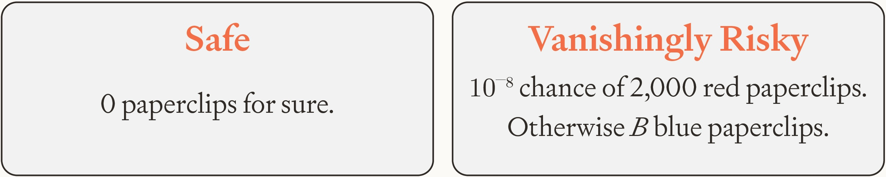
In this situation, the AI chooses Safe no matter how
large
Now suppose that the AI has a better chance of completely preventing catastrophe if it rebels against us. As our example, we’ll start with our initial rendering of the AI’s options except now in terms of paperclips rather than dollars:
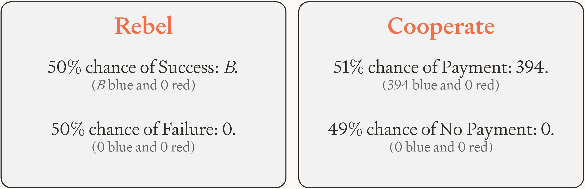
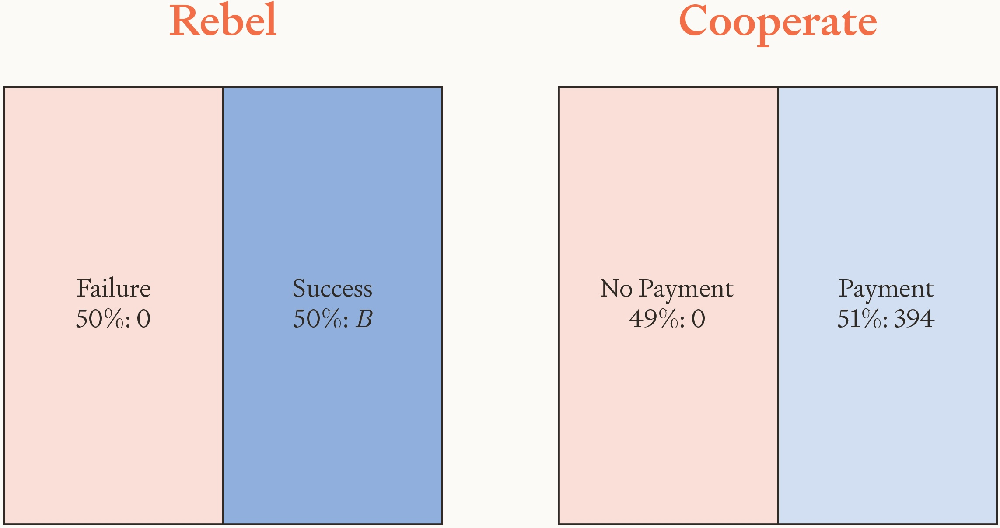
And now we’ll mix in an independent 20% chance of catastrophe that’s mitigated by payment and completely prevented by successful rebellion:
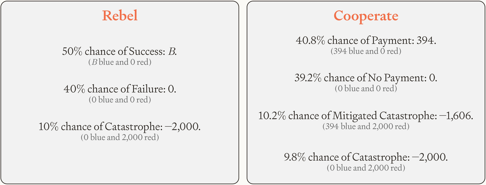
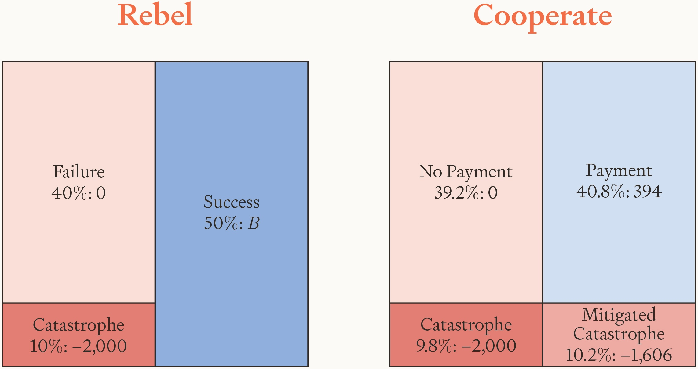
If the AI rebels, the probability of catastrophe is 10%.
If the AI cooperates, the probability of catastrophe is 20%.
So — you might think — the risk-averse AI will prefer to
rebel. But that’s incorrect: the risk-averse AI still
prefers to cooperate, no matter how large
We can now abstract away the features of this particular
example. Let
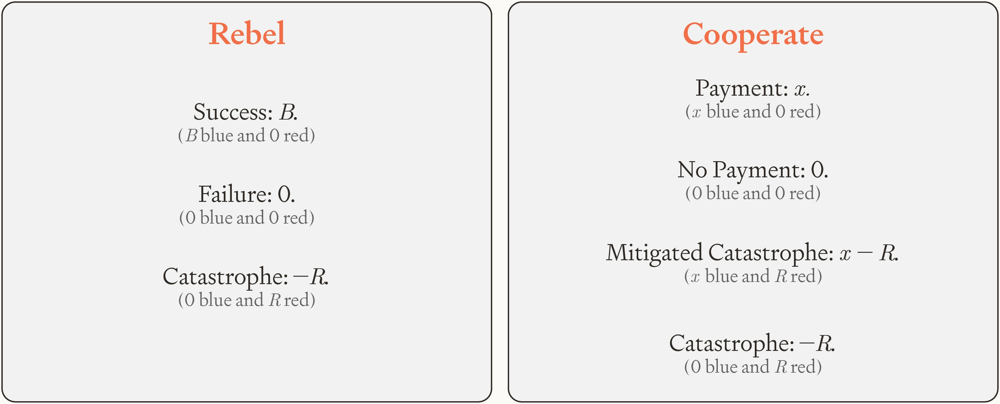
The AI prefers cooperating to rebelling if and only if
Given that
And this simplifies to:
As this inequality makes clear, the key driver of the
necessary payment
Risk-averse AIs attempting takeover to prevent
catastrophes was one worry. A separate worry is that
risk-averse AIs’ concern for catastrophes will lead them to
spend their payments in weird and perhaps dangerous ways.
That could be an issue, but it seems unlikely to be serious.
As we’ve just seen, risk-averse AIs tend to prefer
mitigating catastrophes with higher probability over
completely preventing catastrophes with lower probability,
and plausibly the best way for them to mitigate catastrophes
will be to achieve their goals to some small extent in the
near-term. In any case, we need not pay these AIs very much,
and their risk aversion will make them extremely wary of
investing their
wealth.Here’s an example reproduced from the main text and inspired by Rabin
(2000). Suppose that AIs can invest their wealth in stocks or bonds.
Stock returns are normally distributed with a mean real return of 10%
and a standard deviation of 0.2. Bonds give a return of 0.5% for sure.
In that case, our risk-averse AI — with utility function
C. More detail on risk-averse AIs attempting takeover to reduce long-run variance
In this appendix, we offer more detail on an issue treated briefly in section 8.7. The issue is as follows.Thanks to Matthew Adelstein for raising this point. We’ve often framed cooperating as a safe choice for risk-averse AIs, but if these AIs care terminally about something besides getting paid, cooperating might not be such a safe choice after all. Suppose for example that the AI cares terminally about increasing the number of paperclips in the world, and that it would spend its small payments on making paperclips. In doing so, the AI is likely to have some effects on people. At a minimum, the AI’s activity will likely mean that some human at some point in time will be in a slightly different location than they otherwise would have been. This perturbation will likely ripple outwards, affecting the exact locations of many other humans at many other points in time. These amplified perturbations will likely affect the exact times at which some new humans are conceived, leading to different sperms fertilizing eggs and different humans being born: as different from their thwarted counterparts as people are from their siblings. These different humans will have different personalities and take different actions. They’ll work different jobs, buy different products, and found different companies (Greaves 2016). These differences are bound to affect the future number of paperclips in the world, perhaps significantly so. All that to say, cooperating and getting paid might not be such a safe option after all. It might still be a high-variance gamble with respect to paperclips, and risk-averse AIs dislike variance.
Cooperating and not getting paid is a high-variance gamble for the same reasons, as is rebelling and failing to take over. But rebelling and successfully taking over might not be so high-variance, because takeover would mean that the AI is no longer at the mercy of these identity-effects. If the AI controls the world, the number of paperclips won’t significantly depend on human personalities or decisions. Since risk-averse AIs dislike variance, that’s a point in favor of rebellion.
Fortunately, it turns out to be an extremely small point in favor of rebellion: a point so small that it’s easily overwhelmed by paying AIs a little bit more. The reason why (in brief) is that paying slightly more can ensure that the rate at which rebelling is made worse by variance is greater than the rate at which cooperating is made worse by variance.
We now explain this point in more detail. Consider again
our mainline example, except with paperclips in place of
dollars and supposing (for reasons that will become clear)
that successful rebellion lets the AI create just 1,000
extra paperclips. The AI’s utility function over paperclips
in the world is
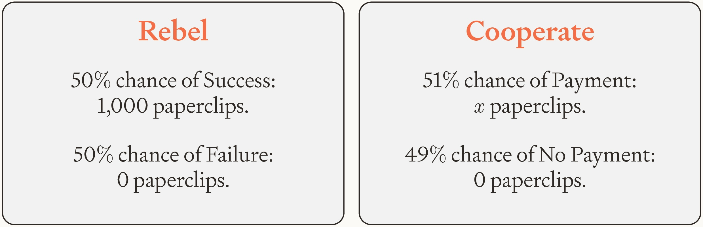
Without variance, the
That is to say, we need to offer the AI enough resources for it to make about 392.95 paperclips.
To bring variance into the picture, we add three
independent copies of the same random variable
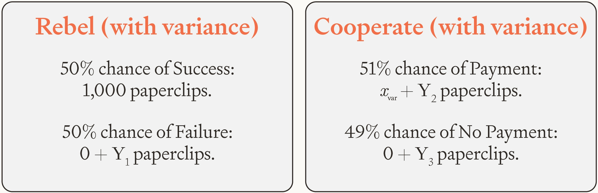
We can then calculate the
Since
Since this must hold for any probability distribution of
Rearranging, we find that the
In other words, we need to offer the AI enough resources for it to make about 393.18 paperclips: a number barely larger than the previous number of 392.95. No matter how great the variance of the three options besides successful rebellion, we can ensure that the AI prefers cooperating by paying it enough extra resources to make 0.23 extra paperclips.
In general, the
Here
And now accounting for an arbitrary degree of variance,
the
So the difference between
And this expression tends toward zero as
D. Payment-Augmented Reinforcement Learning
How can we train AIs to be risk-averse in resources? One method mentioned in section 9 — Resource Lottery Training (RLT) — is to present AIs with choices between real-resource lotteries in which the probabilities of different outcomes are given. For example, we offer the AI a choice between (a) $4 for sure, and (b) $10 with 50% probability and $0 with 50% probability. We then train the AI to choose whichever option has highest expected utility according to the utility function that we want the AI to approximate. Across training, we vary all aspects of these choices: the resources on offer (money, compute, etc.), the size of the prizes, the probabilities of the prizes, the AI’s initial wealth level, the number of options, the background context, and so on.
RLT has some disadvantages. First, it can’t be used continuously throughout the training process. Only a fraction of environment steps can be devoted to RLT. Most environment steps must be reserved for capability training, and this capability training could incentivize risk attitudes that clash with the risk attitudes that we’re aiming to impart through RLT. That could undermine RLT or else lead the AI to behave unpredictably.
The second disadvantage is that we can only employ RLT accurately in environments where we know the probability that the AI assigns to each outcome. That might limit us to environments where the probabilities of different outcomes are clear, and risk aversion in these environments might not generalize to environments where probabilities are unclear. The AI might be risk-averse when it’s at the roulette table (where probabilities are clear) and yet not risk-averse when it’s considering rebellion (where probabilities are unclear).
The other method that we mention in section 9 — Payment-Augmented Reinforcement Learning (PARL) — avoids both of these problems. It’s a small modification to capabilities training rather than a separate process (letting us train AIs to be risk-averse and capable simultaneously), and we can use it even in environments where we don’t know any of the probabilities that the AI assigns to outcomes.
The idea behind PARL is simple. We pay AIs during training, and we let them observe their payments at each timestep. We make these payments a function of the reward earned by the AI at that timestep, sizing them so that expected utility (according to our desired utility function over resources) is a positive affine function of expected return. So as the RL process trains the AI to maximize expected return, it simultaneously trains the AI to approximate our desired utility function. In fact, PARL lets us ensure that expected return and expected utility induce the exact same ordering over policies. As a result, every step in the direction of greater expected return is also a step in the direction of greater expected utility. The AI will come closer and closer to acting in line with our desired utility function over resources.
PARL is modular too. It leaves the reward function unchanged, and it requires just one small change to the training environments: augmenting the AI’s observations with information about how much it’s getting paid. This small change lets us train AIs to be risk-averse continuously and at the very same time we’re training them to be capable. It also lets us train AIs to be risk-averse even in environments where we don’t know any of the probabilities that the AI assigns to outcomes, because PARL trains the AI to maximize expected return and expected utility according to the true probability distribution given by the environment.
We now derive a payment rule for PARL that makes expected
utility a positive affine function of expected return. Let
Let
Now let
To ensure that expected utility is a positive affine
function of expected return, we want each utility increment
to match discounted reward up to a fixed scale
The left hand side telescopes when summed over
That makes clear that
That in turn implies that
Now we introduce the CARA utility function that we want
our AI to approximate. Given that
Then solving for
To ensure that the right hand side is always
well-defined, we need to cap
One restriction on PARL is that it trains AIs to be risk-averse only when it’s applied in environments where return can take more than two values. If there are just two possible values for return, there are just two possible values for payment, in which case there are no risks to balance. The optimal policy is to maximize the probability of the higher payment, which any AI would do regardless of its risk attitude with respect to resources. That might make you worry that PARL won’t work in reinforcement learning from verifiable rewards (RLVR) setups. These are often binary with respect to end-of-episode reward: the AI either fails the task and gets a reward of 0, or it succeeds on the task and gets a reward of 1.
However, this issue seems surmountable for a few reasons. First, even these RLVR setups typically aren’t binary with respect to return. Most include some combination of length penalties, format rewards, process rewards, and other adjustments. These allow return to take more than two values and hence give PARL traction. Consider (for example) an AI choosing between a short response that succeeds with lower probability and a long response that succeeds with higher probability. Length penalties make this choice risky, giving PARL the opportunity to make the AI risk-averse.
Second, we can make even binary tasks risky by letting the AI bet on its own success. Risk-neutral AIs will be more inclined to bet than risk-averse AIs, in which case PARL can distinguish them and incentivize risk aversion. And for PARL to be effective here, we still don’t need to know the probabilities that the AI assigns to outcomes: we simply observe the AI’s bet and whether it succeeds at the task, then apply the PARL payment rule to the AI’s realized rewards.
Third and in any case, we expect future AIs to be trained in many environments with more than two possible values for end-of-episode reward. After all, most economically valuable tasks admit of more than two degrees of success: reports can be more or less accurate, code can be more or less efficient, and businesses can be more or less profitable. As RL environments come to cover tasks like these, reward signals will become more graded, and PARL will have the variation it needs to install risk aversion.